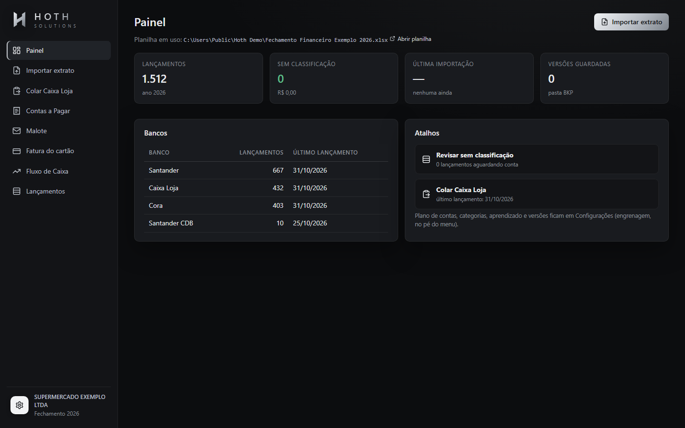
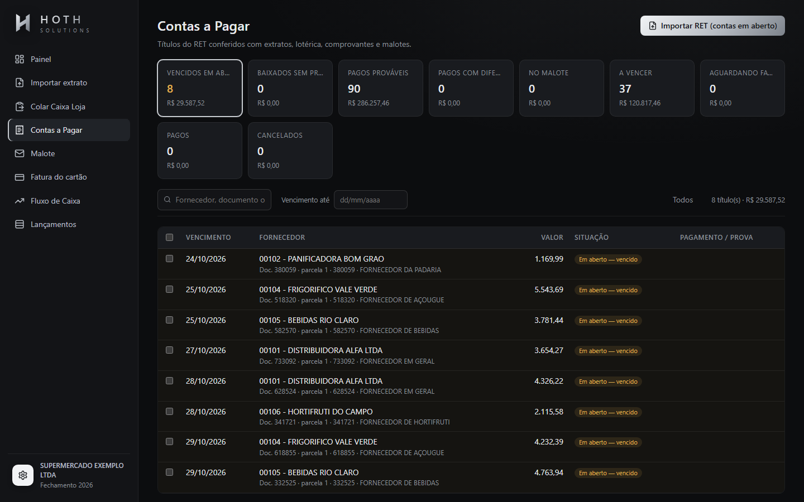
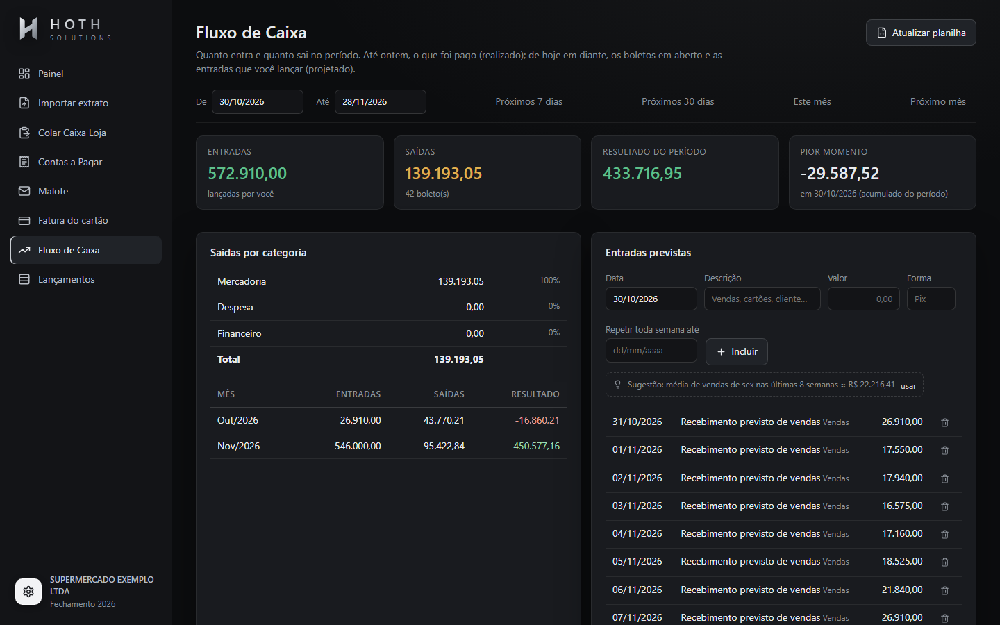
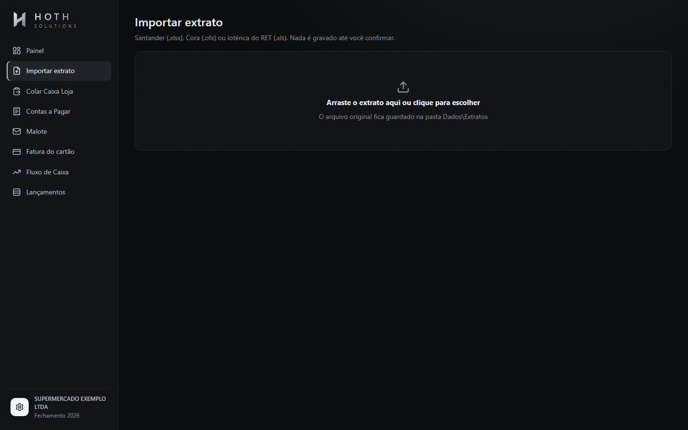
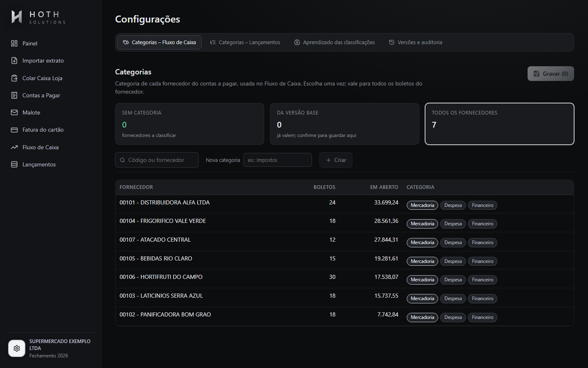

Importe
Arraste o extrato de qualquer banco. O app reconhece o formato, ignora o que já foi importado e guarda uma cópia do original.
Arraste o extrato. O Hoth Finance classifica cada lançamento, confere cada boleto pago e entrega DFC, DRE e fluxo de caixa prontos, com auditoria de tudo o que mudou.

Arraste o extrato de qualquer banco. O app reconhece o formato, ignora o que já foi importado e guarda uma cópia do original.
Cada linha chega com a conta proposta e a confiança. Verde aplica, amarelo pede seu olhar. Corrigiu uma? Ele aprende e aplica aos parecidos.
Cada boleto do contas a pagar é procurado em todos os bancos, no caixa, nos comprovantes e no malote, da prova mais forte para a mais fraca.
DFC, DRE e fluxo de caixa se refazem na hora. Você vê o mês fechado e os próximos 30 dias projetados.
Regras fixas, histórico por fornecedor e similaridade de texto. Cada correção vira conhecimento.
Sete provas, da mais forte à mais fraca, para dizer se cada conta foi paga e onde.
Abre o PDF protegido e troca o débito único pelas compras, cada uma na sua conta.
Pago na data do pagamento, em aberto no vencimento. A projeção se refaz a cada importação.
Toda gravação exige o arquivo fechado, faz backup e registra auditoria. Qualquer versão volta com um clique.
Crie, mescle e reordene contas e grupos. DFC e DRE se reconstroem por fórmulas, sem quebrar.
Passe o mouse para ver como cada prova decide.
O lançamento já foi ligado ao título antes.
Código do fornecedor e número do boleto no extrato.
Mesmo fornecedor, mesmo valor, perto do vencimento.
PDF do comprovante bancário com o mesmo boleto.
Valor da fita do malote que voltou do banco.
Mesmo valor e o nome escrito no caixa da loja.
Último recurso: sugere, mas pede confirmação.




Baixe um extrato fictício, importe, classifique e veja o resultado. Tudo no navegador, em dois minutos.
Testar aplicativo →